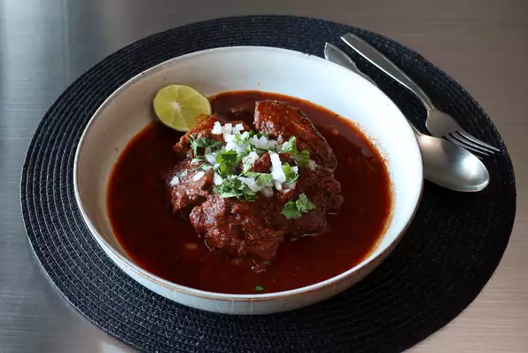

Beef Birria

List of Ingredients
- 3 (8 ounce) beef short ribs
- 1 (2 1/2 pound) beef chuck
- 4 teasoons kosher salt
- 1 teaspoon freshly ground black pepper
- 2 teaspoons dried Mexican oregano
- 1 teaspoon ground cumin
- 1/4 teaspoon ground cinnamon
- 1/4 teaspoon ground cloves
- 7 peppers dried guajillio chilies
- 1 large onion, roughly chopped
- 1 (1 inch) piece fresh ginger, thinly sliced
- 3 large tomatoes, cored and chopped
- 2 cups water
- 3 bay leaves
- 1 tablespoon honey
- 1/4 cup white vinegar
- 4 cups chicken broth
- 2 tablespoons finely diced white onion
- 1 tablespoon chopped fresh cilantro
- 1 medium lime, sliced
Directions
- Step 1
Cut each beef short rib through the middle, all the way down to the bone.
Cut beef chuck in half; cut each half into 3- to 4-inch pieces.
- Step 2
Place beef chuck and short ribs into a soup pot and season with salt, black pepper, oregano,
cumin, cinnamon, and cloves. Toss very thoroughly until the meat is evenly coated with the spices, 2 to 3 minutes.
- Step 3
Cover and transfer into the refrigerator for at least 6 hours, or overnight.
- Step 4
Prep guajillo chiles by snipping off stems with scissors; slice open and scrape or shake out the seeds onto a plate to discard.
- Step 5
Heat olive oil in a saucepan over medium heat. Add dried guajillo chiles and toss in
the hot oil, about 30 seconds. Add chopped onion,garlic and ginger;
toss to combine. Add tomatoes and water, raise heat to high, and bring
the mixture to a simmer. Reduce heat to medium-low and let simmer for 30 minutes.
- Step 6
Turn off heat and use an immersion blender to blend the mixture as smooth as
possible, or transfer to a regular blender, working in batches as needed.
- Step 7
Remove the soup pot with meat from the refrigerator.Strain the reserved chili
mixture into the pot using a large mesh strainer. Add bay leaves,honey,vinegar,and
chicken broth.
- Step 8
Bring to a boil over high heat, and then lower to medium-low. Simmer gently,stirring
occasionally, until the maet is falling-apart tender, 3 to 4 hours. Skim fat off of the top and reserve
for future birria queso tacos.
- Step 9
Place some chunks of beef into a soup bowl and ladle some of the cooking liquid over top.
Top with white onion and chopped cilantro and squeeze lime juice over top.
Chef's Notes:
The rule of thumb for this kind of thing is to use 1 teaspoon of kosher salt per pound of meat
This will work with other dried chiles-such as ancho,pasilla,or
California. You can use water with chicken bouillon powder instead of chicken broth.
Water or broth can be added as needed to keep the stew brothy as it simmers,or it
can be allowed to reduce and thicken as it cooks. The beef can be served in large chunks or shredded with a fork.
If you enjoyed this with beef, you shoud really get some goat or lamb and do it that way, too. That little bit of extra
gaminess you gain with those meats really does work out, even with this flavor profile.
Return to Homepage